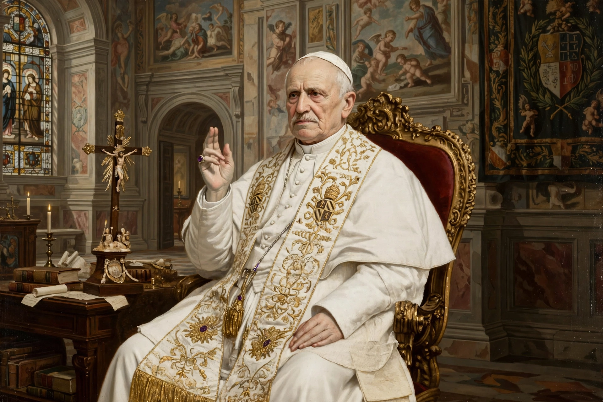

Pope Pius IX (Italian: Pio IX; born Giovanni Maria Mastai Ferretti; 13 May 1792 – 7 February 1878) was head of the Catholic Church from 1846 to 1878, the longest verified papal reign. He was notable for convoking the First Vatican Council in 1868 and for permanently losing control of the Papal States in 1870 to the Kingdom of Italy.
Born in Senigallia into a noble family, he studied theology and was ordained in 1819. He became Archbishop of Spoleto in 1827, Bishop of Imola in 1832, and cardinal in 1840.
Elected in 1846 as a liberal compromise candidate, he initially granted an amnesty and reforms. After the revolutions of 1848 and the assassination of his minister Pellegrino Rossi, he fled to Gaeta and on return adopted conservative policies.
He defined the dogma of the Immaculate Conception in Ineffabilis Deus (1854), issued the Syllabus of Errors (1864) condemning liberalism and modernism, and convoked Vatican I, which defined papal infallibility in 1870.
Italian unification under Piedmont-Sardinia stripped the Papal States; Rome fell on 20 September 1870. Pius refused to recognise the Kingdom of Italy and considered himself a "prisoner in the Vatican".
He died in 1878 and was beatified by John Paul II in 2000.
See also: First Vatican Council, Papal States